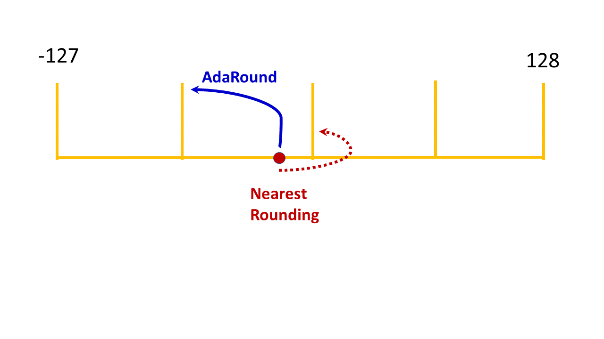

Adaptive rounding¶
Context¶
Adaptive rounding (AdaRound) is a rounding mechanism for model weights designed to adapt to the data to improve the accuracy of the quantized model.
By default, AIMET uses nearest rounding for quantization, in which weight values are quantized to the nearest integer value. AdaRound instead uses training data to choose how to round quantized weights. This rounding technique improves the quantized model’s accuracy in many cases.
The following figure illustrates how AdaRound might change the rounding of a quantized value.
{kind=link}
See the Optimization User Guide for a discussion of the recommended sequence of all quantization techniques.
Complementary techniques¶
As a standalone technique, AdaRound can yield a significant improvement in performance. To layer other techniques with AdaRound, we recommend applying AdaRound:
- After batch norm folding (BNF) and cross layer equalization (CLE).
Applying these techniques first can improve the accuracy gained using AdaRound.
- Before quantization aware training (QAT).
AdaRound serves as a well-disciplined weights initialization method for QAT.
Hyper parameters¶
A number of hyper parameters used during AdaRound optimization are exposed in the API. The default values of some of these parameters tend to lead to stable results and we recommend that you not change them.
Use the following guideline for adjusting hyper parameters with AdaRound.
- Hyper Parameters to be changed at will:
Number of batches. AdaRound should see 500-1000 images. Loader batch size times number of batches gives the number of images. For example if the data loader batch size is 64, use 16 batches for a yield of 64 * 16 = 1024 images.
Number of iterations. Default is 10,000.
- Hyper Parameters to be changed with caution:
Regularization parameter. Default is 0.01.
- Hyper Parameters to avoid changing:
Beta range. Leave the value at the default of (20, 2).
Warm start period. Leave at the default value, 20%.
You can learn more about the AdaRound parameters here.
Workflow¶
Prerequisites¶
To use AdaRound, you must:
Load a trained model
Create a training or validation dataloader for the model
Workflow¶
Setup¶
import torch
from torchvision.models import mobilenet_v2
from torch.utils.data import DataLoader
from datasets import load_dataset
from evaluate import evaluator
# General setup that can be changed as needed
device = "cuda:0" if torch.cuda.is_available() else "cpu"
model = mobilenet_v2(pretrained=True).eval().to(device)
num_batches = 32
data = load_dataset('imagenet-1k', streaming=True, split="train")
data_loader = DataLoader(data, batch_size=num_batches, num_workers = 4)
dummy_input = torch.randn(1, 3, 224, 224).to(device)
def forward_pass(model: torch.nn.Module):
with torch.no_grad():
for images, _ in data_loader:
model(images)
path = './'
filename = 'mobilenet'
Load the model for AdaRound. In the following code example, the model is MobileNetV2.
from aimet_common.defs import QuantScheme
from aimet_common.quantsim_config.utils import get_path_for_per_channel_config
from aimet_tensorflow.keras.adaround_weight import Adaround, AdaroundParameters
from aimet_tensorflow.keras.quantsim import QuantizationSimModel
from tensorflow.keras import applications, losses, metrics, preprocessing
from tensorflow.keras.applications import mobilenet_v2
model = applications.MobileNetV2()
print(model.summary())
Model: "mobilenetv2_1.00_224"
__________________________________________________________________________________________________
Layer (type) Output Shape Param # Connected to
==================================================================================================
input_1 (InputLayer) [(None, 224, 224, 3 0 []
)]
Conv1 (Conv2D) (None, 112, 112, 32 864 ['input_1[0][0]']
)
bn_Conv1 (BatchNormalization) (None, 112, 112, 32 128 ['Conv1[0][0]']
)
Conv1_relu (ReLU) (None, 112, 112, 32 0 ['bn_Conv1[0][0]']
)
expanded_conv_depthwise (Depth (None, 112, 112, 32 288 ['Conv1_relu[0][0]']
wiseConv2D) )
...
AdaRound optimization requires an unlabeled dataset. This example uses the ImageNet validation data.
BATCH_SIZE = 32
imagenet_dataset = preprocessing.image_dataset_from_directory(
directory='<your_imagenet_validation_data_path>',
labels='inferred',
label_mode='categorical',
image_size=(224, 224),
batch_size=BATCH_SIZE,
shuffle=True,
)
imagenet_dataset = imagenet_dataset.map(
lambda x, y: (mobilenet_v2.preprocess_input(x), y)
)
NUM_CALIBRATION_SAMPLES = 2048
calibration_dataset = imagenet_dataset.take(NUM_CALIBRATION_SAMPLES // BATCH_SIZE)
unlabeled_dataset = calibration_dataset.map(lambda x, _: x)
Load the model for AdaRound. The following code example converts PyTorch MobileNetV2 to ONNX and uses it in the subsequent code.
import math
import os
import numpy as np
import onnx
import onnxsim
import torch
from aimet_common.defs import QuantScheme
from aimet_onnx.adaround.adaround_weight import Adaround, AdaroundParameters
from aimet_onnx.defs import DataLoader
from aimet_onnx.quantsim import QuantizationSimModel
from datasets import load_dataset
from torchvision import transforms
from torchvision.models import MobileNet_V2_Weights, mobilenet_v2
pt_model = mobilenet_v2(weights=MobileNet_V2_Weights.DEFAULT)
input_shape = (1, 3, 224, 224)
dummy_input = torch.randn(input_shape)
# Modify file_path as you wish, we are using temporary directory for now
file_path = os.path.join('/tmp', f'mobilenet_v2.onnx')
torch.onnx.export(
pt_model,
(dummy_input,),
file_path,
input_names=['input'],
output_names=['output'],
dynamic_axes={
'input': {0: 'batch_size'},
'output': {0: 'batch_size'},
},
)
# Load exported ONNX model
model = onnx.load_model(file_path)
try:
model, _ = onnxsim.simplify(model)
except:
print('ONNX Simplifier failed. Proceeding with unsimplified model')
AdaRound optimization requires an unlabeled dataset. This example uses the ImageNet validation data.
dataset = load_dataset(
'ILSVRC/imagenet-1k',
split='validation',
)
class CustomDataLoader(DataLoader):
def __init__(
self,
data: np.ndarray,
batch_size: int,
iterations: int,
unlabeled: bool = True,
):
super().__init__(data, batch_size, iterations)
self._current_iteration = 0
self._unlabeled = unlabeled
def __iter__(self):
self._current_iteration = 0
return self
def __next__(self):
if self._current_iteration < self.iterations:
start = self._current_iteration * self.batch_size
end = start + self.batch_size
self._current_iteration += 1
batch_data = self._data[start:end]
if self._unlabeled:
return np.stack(batch_data['image'])
else:
return np.stack(batch_data['image']), np.stack(batch_data['label'])
else:
raise StopIteration
preprocess = transforms.Compose(
[
transforms.Resize(256),
transforms.CenterCrop(224),
transforms.ToTensor(),
transforms.Normalize(mean=[0.485, 0.456, 0.406], std=[0.229, 0.224, 0.225]),
]
)
def transforms(examples):
examples['image'] = [
preprocess(image.convert('RGB')) for image in examples['image']
]
return examples
dataset.set_transform(transforms)
BATCH_SIZE = 32
NUM_SAMPLES = 256
unlabeled_data_loader = CustomDataLoader(
dataset, BATCH_SIZE, math.ceil(NUM_SAMPLES / BATCH_SIZE)
)
Step 1¶
Apply AdaRound to the model.
from aimet_torch.quantsim import QuantizationSimModel
from aimet_torch.adaround.adaround_weight import Adaround, AdaroundParameters
params = AdaroundParameters(data_loader=data_loader, num_batches=num_batches)
# Returns model with AdaRound-ed weights and their corresponding encodings
adarounded_model = Adaround.apply_adaround(model, dummy_input, params, path=path, filename_prefix=filename)
def pass_calibration_data(model, _):
for inputs, _ in calibration_dataset:
model(inputs)
PARAM_BITWIDTH = 4
ACTIVATION_BITWIDTH = 8
QUANT_SCHEME = QuantScheme.post_training_tf
params = AdaroundParameters(
data_set=unlabeled_dataset,
num_batches=NUM_CALIBRATION_SAMPLES // BATCH_SIZE,
default_num_iterations=1,
)
ada_rounded_model = Adaround.apply_adaround(
model,
params,
path='/tmp',
filename_prefix='mobilenet_v2',
default_param_bw=PARAM_BITWIDTH,
default_quant_scheme=QUANT_SCHEME,
config_file=get_path_for_per_channel_config(),
)
def pass_calibration_data(session, _):
input_name = session.get_inputs()[0].name
for inputs in unlabeled_data_loader:
session.run(None, {input_name: inputs})
PARAM_BITWIDTH = 4
ACTIVATION_BITWIDTH = 8
params = AdaroundParameters(
data_loader=unlabeled_data_loader,
num_batches=math.ceil(NUM_SAMPLES / BATCH_SIZE),
default_num_iterations=5,
forward_fn=pass_calibration_data,
forward_pass_callback_args=None,
)
ada_rounded_model = Adaround.apply_adaround(
model,
params,
path='/tmp',
filename_prefix='mobilenet_v2',
default_param_bw=PARAM_BITWIDTH,
)
Step 2¶
Use AIMET’s QuantSim to simulate quantization.
sim = QuantizationSimModel(adarounded_model, dummy_input)
# AdaRound optimizes the rounding of weight quantizers only. These values are preserved through load_encodings()
sim.load_encodings(encodings=path + filename, allow_overwrite=False)
# The activation quantizers remain uninitialized and derived through compute_encodings()
sim.compute_encodings(forward_pass)
sim = QuantizationSimModel(
ada_rounded_model,
quant_scheme=QUANT_SCHEME,
default_param_bw=PARAM_BITWIDTH,
default_output_bw=ACTIVATION_BITWIDTH,
config_file=get_path_for_per_channel_config(),
)
# AdaRound optimizes the rounding of weight quantizers only. These values are preserved through set_and_freeze_param_encodings()
sim.set_and_freeze_param_encodings(encoding_path='/tmp/mobilenet_v2.encodings')
# The activation quantizers remain uninitialized and derived through compute_encodings()
sim.compute_encodings(pass_calibration_data, None)
sim = QuantizationSimModel(
ada_rounded_model,
quant_scheme=QuantScheme.post_training_tf,
default_param_bw=PARAM_BITWIDTH,
default_activation_bw=ACTIVATION_BITWIDTH,
)
# AdaRound optimizes the rounding of weight quantizers only. These values are preserved through set_and_freeze_param_encodings()
sim.set_and_freeze_param_encodings(encoding_path='/tmp/mobilenet_v2.encodings')
# The activation quantizers remain uninitialized and derived through compute_encodings()
sim.compute_encodings(pass_calibration_data, None)
Step 3¶
Evaluate the model.
evaluator = evaluator("image-classification")
accuracy = evaluator.compute(model_or_pipeline=model, data=data, metric="accuracy")
eval_dataset = imagenet_dataset.skip(NUM_CALIBRATION_SAMPLES // BATCH_SIZE)
sim.model.compile(
loss=[losses.CategoricalCrossentropy()],
metrics=[metrics.CategoricalAccuracy()],
)
result = sim.model.evaluate(eval_dataset)
print(result)
eval_data_loader = CustomDataLoader(
dataset, BATCH_SIZE, math.ceil(NUM_SAMPLES / BATCH_SIZE), unlabeled=False
)
correct_predictions = 0
total_samples = 0
for inputs, labels in eval_data_loader:
input_name = sim.session.get_inputs()[0].name
pred_probs, *_ = sim.session.run(None, {input_name: inputs})
pred_labels = np.argmax(pred_probs, axis=1)
correct_predictions += np.sum(pred_labels == labels)
total_samples += labels.shape[0]
accuracy = correct_predictions / total_samples
Step 4¶
If AdaRound resulted in satisfactory accuracy, export the model.
sim.export(path=path, filename_prefix="quantized_" + filename, dummy_input=dummy_input.cpu())
sim.export(path='/tmp', filename_prefix='quantized_mobilenet_v2')
sim.export(path='/tmp', filename_prefix='quantized_mobilenet_v2')
If the model is still not accurate enough, the next step is typically to try quantization-aware training.
API¶
Top level APIs
- aimet_torch.adaround.adaround_weight.Adaround.apply_adaround(model, dummy_input, params, path, filename_prefix, default_param_bw=4, param_bw_override_list=None, ignore_quant_ops_list=None, default_quant_scheme=QuantScheme.post_training_tf_enhanced, default_config_file=None)¶
Returns model with optimized weight rounding of every module (Conv and Linear) and also saves the corresponding quantization encodings to a separate JSON-formatted file that can then be imported by QuantSim for inference or QAT
- Parameters:
model (
Module) – Model to Adarounddummy_input (
Union[Tensor,Tuple]) – Dummy input to the model. Used to parse model graph. If the model has more than one input, pass a tuple. User is expected to place the tensors on the appropriate device.params (
AdaroundParameters) – Parameters for Adaroundpath (
str) – path where to store parameter encodingsfilename_prefix (
str) – Prefix to use for filename of the encodings filedefault_param_bw (
int) – Default bitwidth (4-31) to use for quantizing layer parametersparam_bw_override_list (
Optional[List[Tuple[Module,int]]]) – List of Tuples. Each Tuple is a module and the corresponding parameter bitwidth to be used for that module.ignore_quant_ops_list (
Optional[List[Module]]) – Ops listed here are skipped during quantization needed for AdaRounding. Do not specify Conv and Linear modules in this list. Doing so, will affect accuracy.default_quant_scheme (
QuantScheme) – Quantization scheme. Supported options are using Quant Scheme Enum QuantScheme.post_training_tf or QuantScheme.post_training_tf_enhanceddefault_config_file (
Optional[str]) – Default configuration file for model quantizers
- Return type:
Module- Returns:
Model with Adarounded weights and saves corresponding parameter encodings JSON file at provided path
Adaround parameters
- class aimet_torch.adaround.adaround_weight.AdaroundParameters(data_loader, num_batches, default_num_iterations=None, default_reg_param=0.01, default_beta_range=(20, 2), default_warm_start=0.2, forward_fn=None)[source]¶
Configuration parameters for Adaround
- Parameters:
data_loader (
DataLoader) – Data loadernum_batches (
int) – Number of batches to be used for Adaround. A commonly recommended value for this parameter is the smaller value among (1) len(data_loader) and (2) ceil(2000/batch_size)default_num_iterations (
Optional[int]) – Number of iterations to adaround each layer. The default value is 10K for models with 8- or higher bit weights, and 15K for models with lower than 8 bit weights.default_reg_param (
float) – Regularization parameter, trading off between rounding loss vs reconstruction loss. Default 0.01default_beta_range (
Tuple) – Start and stop beta parameter for annealing of rounding loss (start_beta, end_beta). Default (20, 2)default_warm_start (
float) – warm up period, during which rounding loss has zero effect. Default 20% (0.2)forward_fn (
Optional[Callable[[Module,Any],Any]]) – Optional adapter function that performs forward pass given a model and inputs yielded from the data loader. The function expects model as first argument and inputs to model as second argument.
Top-level API
- aimet_tensorflow.keras.adaround_weight.Adaround.apply_adaround(model, params, path, filename_prefix, default_param_bw=4, default_quant_scheme=QuantScheme.post_training_tf_enhanced, config_file=None)¶
Returns model with optimized weight rounding of every op (Conv and Linear) and also saves the corresponding quantization encodings to a separate JSON-formatted file that can then be imported by QuantSim for inference or QAT
- Parameters:
model (
Model) – Model to adaroundparams (
AdaroundParameters) – Parameters for adaroundpath (
str) – path where to store parameter encodingsfilename_prefix (
str) – Prefix to use for filename of the encodings filedefault_param_bw (
int) – Default bitwidth (4-31) to use for quantizing layer parameters. Default 4default_quant_scheme (
QuantScheme) – Quantization scheme. Supported options are QuantScheme.post_training_tf or QuantScheme.post_training_tf_enhanced. Default QuantScheme.post_training_tf_enhancedconfig_file (
Optional[str]) – Configuration file for model quantizers
- Return type:
Model- Returns:
Model with Adarounded weights
Adaround Parameters
- class aimet_tensorflow.keras.adaround_weight.AdaroundParameters(data_set, num_batches, default_num_iterations=10000, default_reg_param=0.01, default_beta_range=(20, 2), default_warm_start=0.2)[source]¶
Configuration parameters for Adaround
- Parameters:
data_set (
DatasetV2) – TF Data setnum_batches (
int) – Number of batchesdefault_num_iterations (
int) – Number of iterations to adaround each layer. Default 10000default_reg_param (
float) – Regularization parameter, trading off between rounding loss vs reconstruction loss. Default 0.01default_beta_range (
Tuple) – Start and stop beta parameter for annealing of rounding loss (start_beta, end_beta). Default (20, 2)default_warm_start (
float) – warm up period, during which rounding loss has zero effect. Default 20% (0.2)
Note
It is recommended to use onnx-simplifier before adarounding the model.
Top-level API
- aimet_onnx.adaround.adaround_weight.Adaround.apply_adaround(model, params, path, filename_prefix, default_param_bw=4, param_bw_override_list=None, ignore_quant_ops_list=None, default_quant_scheme=QuantScheme.post_training_tf_enhanced, default_config_file=None, use_cuda=True, device=0, user_onnx_libs=None)¶
Returns model with optimized weight rounding of every module (Conv and Linear) and also saves the corresponding quantization encodings to a separate JSON-formatted file that can then be imported by QuantSim for inference or QAT
- Parameters:
model (
ModelProto) – Model to Adaroundparams (
AdaroundParameters) – Parameters for Adaroundpath (
str) – path where to store parameter encodingsfilename_prefix (
str) – Prefix to use for filename of the encodings filedefault_param_bw (
int) – Default bitwidth (4-31) to use for quantizing layer parametersparam_bw_override_list (
Optional[List[Tuple[str,int]]]) – List of Tuples. Each Tuple is a param name and the corresponding parameter bitwidth to be used for that param.ignore_quant_ops_list (
Optional[List[str]]) – Ops listed here are skipped during quantization needed for AdaRounding. Do not specify Conv and Linear modules in this list. Doing so, will affect accuracy.default_quant_scheme (
QuantScheme) – Quantization scheme. Supported options are using Quant Scheme Enum QuantScheme.post_training_tf or QuantScheme.post_training_tf_enhanceddefault_config_file (
Optional[str]) – Default configuration file for model quantizersuse_cuda (
bool) – If we should use cudadevice (
int) – CUDA device IDuser_onnx_libs (
Optional[List[str]]) – List of paths to all compiled ONNX custom ops libraries
- Return type:
ModelProto- Returns:
Model with Adarounded weights and saves corresponding parameter encodings JSON file at provided path
Adaround Parameters
- class aimet_onnx.adaround.adaround_weight.AdaroundParameters(data_loader, num_batches, default_num_iterations=None, default_reg_param=0.01, default_beta_range=(20, 2), default_warm_start=0.2, forward_fn=None, forward_pass_callback_args=None)[source]¶
Configuration parameters for Adaround
- Parameters:
data_loader – Data loader
num_batches (
int) – Number of batches to be used for Adaround. A commonly recommended value for this parameter is the smaller value among (1) len(data_loader) and (2) ceil(2000/batch_size)default_num_iterations (
Optional[int]) – Number of iterations to adaround each layer. The default value is 10K for models with 8- or higher bit weights, and 15K for models with lower than 8 bit weights.default_reg_param (
float) – Regularization parameter, trading off between rounding loss vs reconstruction loss. Default 0.01default_beta_range (
Tuple) – Start and stop beta parameter for annealing of rounding loss (start_beta, end_beta). Default (20, 2)default_warm_start (
float) – warm up period, during which rounding loss has zero effect. Default 20% (0.2)forward_fn (
Optional[Callable]) – Function to compute encodings for simforward_pass_callback_args – These argument(s) are passed to the forward_pass_callback as-is. Up to the user to determine the type of this parameter. E.g. could be simply an integer representing the number of data samples to use. Or could be a tuple of parameters or an object representing something more complex. If set to None, forward_pass_callback will be invoked with no parameters.